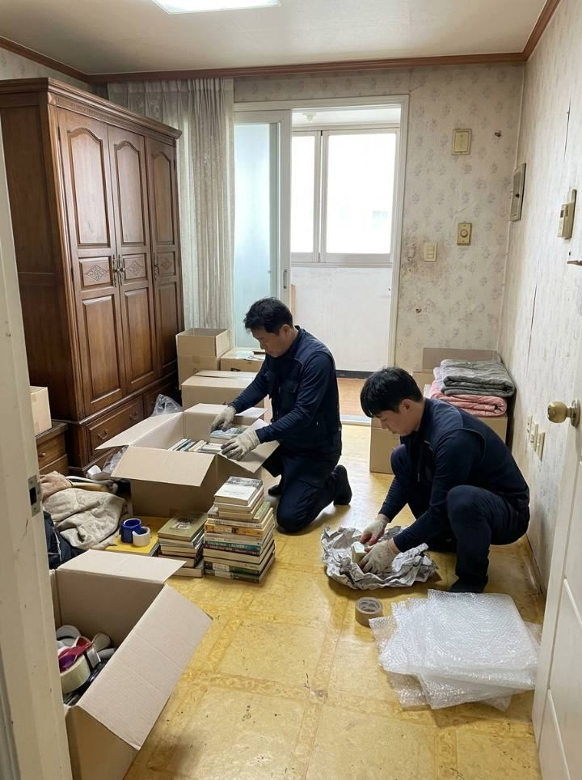

부산 동래구
유품정리·특수청소
유품 정리·짐 정리
누르면 바로 연결돼요
- 동네 업체 3곳 중 골라서
- 출발 전에 예상 금액 안내

동래구에서는 이렇게 다릅니다
가족의 유품을 정리하거나, 오래 쌓인 짐과 쓰레기를 치워야 할 때 정리 전문 업체를 연결합니다. 동래구(온천장·명륜·사직) 안에서 가까운 업체를 먼저 연결합니다.
동래구는 동래온천과 동래시장, 명륜·사직동 아파트 단지가 있는 오래된 주거 지역입니다.
재개발 신축과 오래된 단독주택이 섞여 있고, 온천장 주변 숙박·목욕 시설 설비 문의도 있습니다.
오래된 빌라와 주택은 계단으로만 짐을 내려야 하는 곳이 많아 사다리차를 함께 쓰는 경우가 있습니다.
아파트는 엘리베이터 보호와 사용 시간 예약이 필요해 관리사무소와 먼저 협의합니다.
생활권별로 보기
온천장(온천·숙박) 쪽 유품정리·특수청소 출동은 가게 영업 전후로 작업 시간을 맞추는 경우가 많아 원하는 시간대를 먼저 말씀해 주시면 됩니다.
명륜동(아파트·학원가) 쪽 유품정리·특수청소 출동은 공용 배관과 이어진 문제인지 세대 안 문제인지에 따라 비용 부담이 달라질 수 있습니다.
사직동(아파트·주택가) 쪽 유품정리·특수청소 출동은 아파트 단지는 방문 차량 등록과 엘리베이터 사용을 관리사무소에 미리 알려 두면 작업이 빨라집니다.
안락동(주택가) 쪽 유품정리·특수청소 출동은 수십 년 된 집은 배관과 배선이 여러 번 덧대어 있어 현장에서 금액이 바뀔 수 있다는 점을 미리 알아 두세요.
- 온천장
- 온천·숙박
- 명륜동
- 아파트·학원가
- 사직동
- 아파트·주택가
- 안락동
- 주택가
전화할 때 알려 주세요
- 증상과 언제부터 그랬는지, 가능하면 사진
- 골목 진입이 되는지, 차를 세울 곳이 있는지
- 아파트 단지명과 동·호수, 방문 차량 주차 등록 방법
- 방문 가능한 시간과 받을 연락처
명절 전후와 이사철에 정리 문의가 많습니다. 일정은 가족이 모일 수 있는 날로 잡는 경우가 많습니다.
이런 일이면 부르세요
- 유품 정리
- 짐 정리
- 폐기물 반출
- 고독사 현장
- 저장강박 정리
- 소독
동래구 유품정리·특수청소 비용
참고 범위예요. 업체가 출발하기 전에 전화로 예상 금액을 먼저 알려드립니다.
업체가 오기 전에
- 남길 물건 정하기
사진, 서류, 귀중품처럼 꼭 남길 것을 미리 정해 알려주세요.
- 관리실·집주인 연락
엘리베이터 사용과 작업 시간을 미리 협의합니다.
- 서류 확인
통장, 계약서, 보험 서류는 따로 모아 달라고 요청하세요.
견적은 방문해서 받는 것이 정확합니다. 전화로만 받은 금액은 당일 크게 달라질 수 있습니다.
자주 묻는 질문
유품정리 비용은요?
원룸은 보통 80만~150만 원 선이고, 짐의 양과 폐기물에 따라 달라집니다.
귀중품은 어떻게 하나요?
작업 중 나온 사진, 서류, 귀중품은 따로 모아 전달하는 게 기본입니다.
오래된 빌라인데 수리비가 더 나오나요?
배관이나 설비가 오래되면 부품을 같이 바꿔야 하는 경우가 있어 금액이 조금 오를 수 있습니다. 업체가 출발 전에 예상 범위를 먼저 알려 드리니 듣고 결정하시면 됩니다.